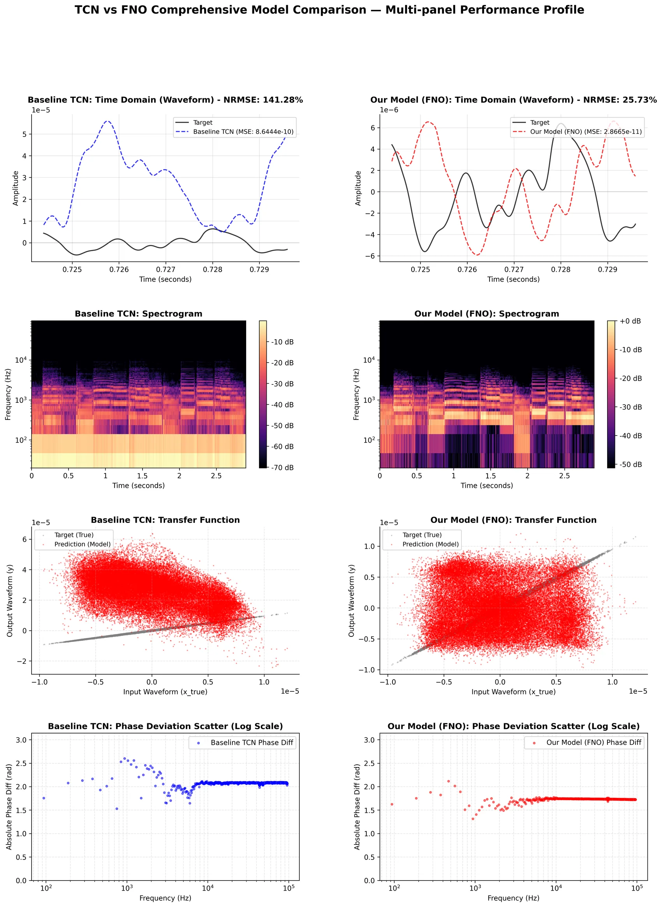
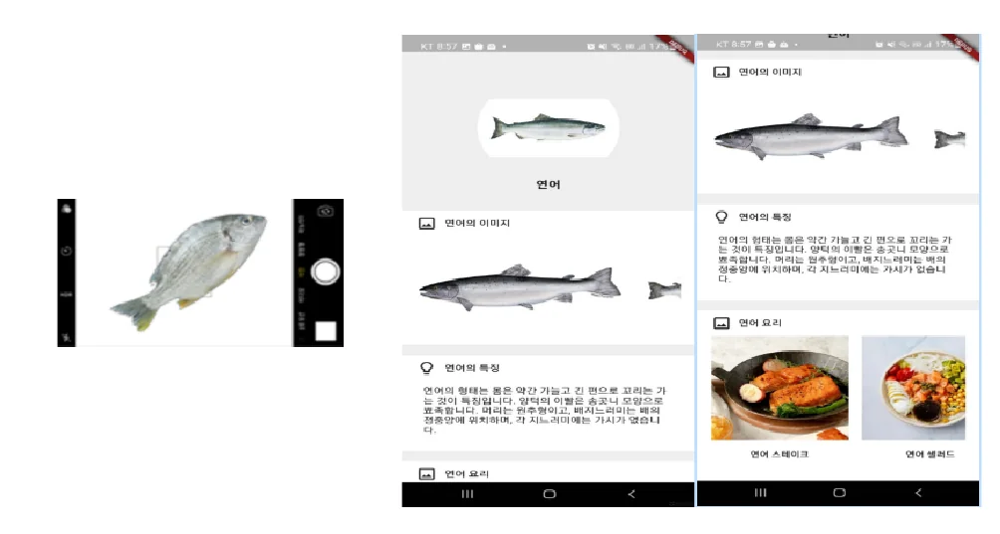
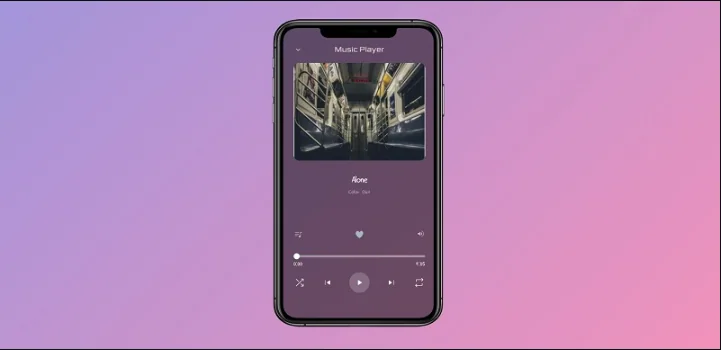
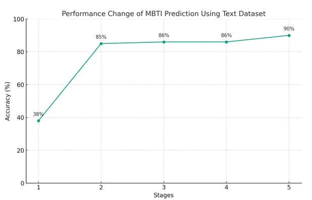
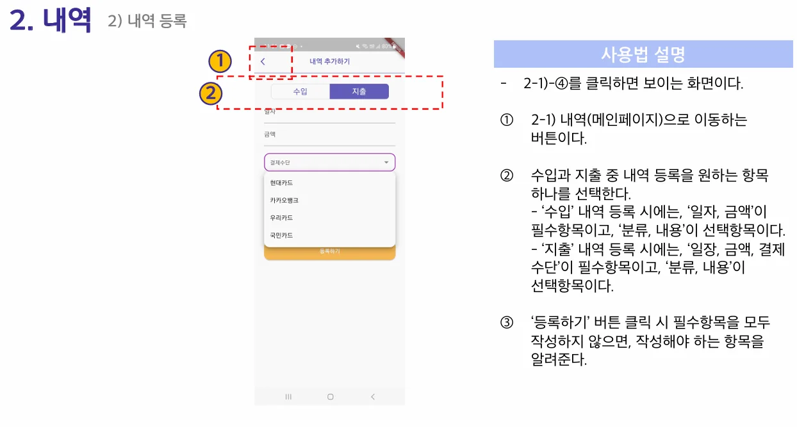
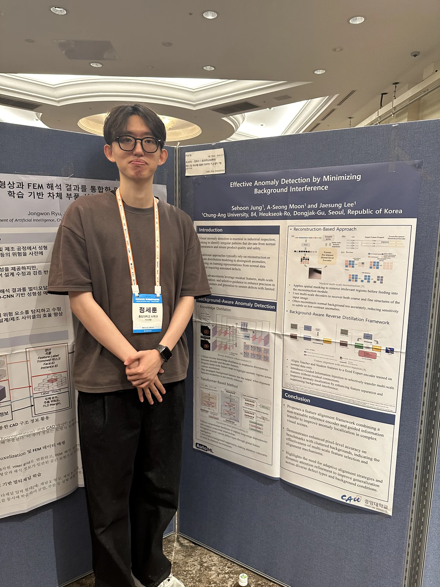
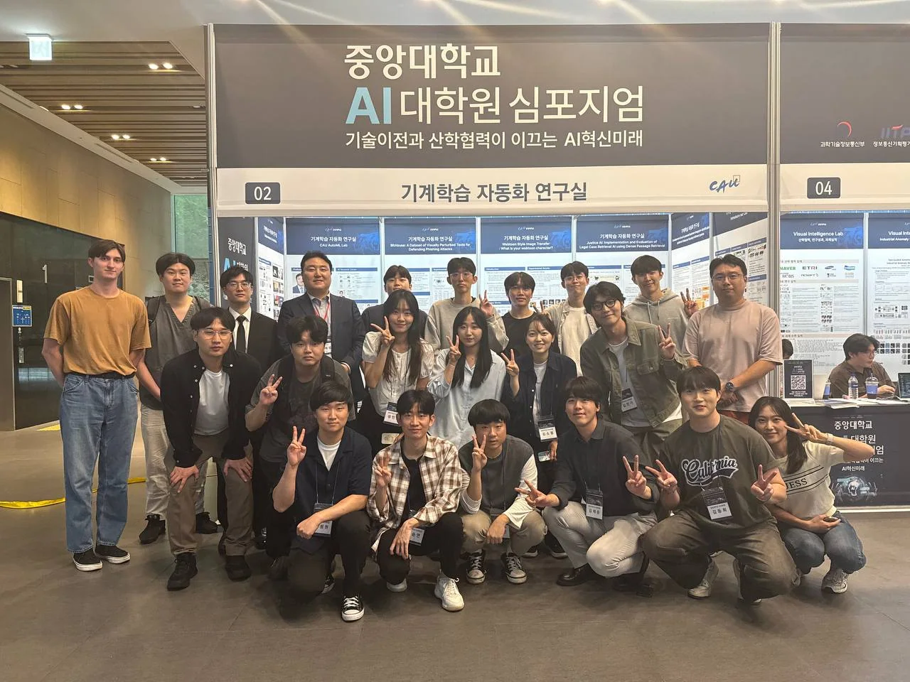
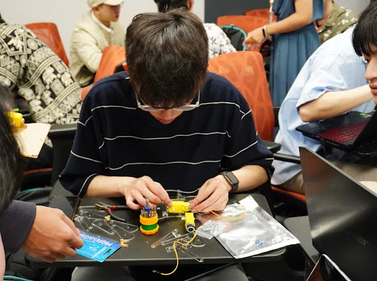
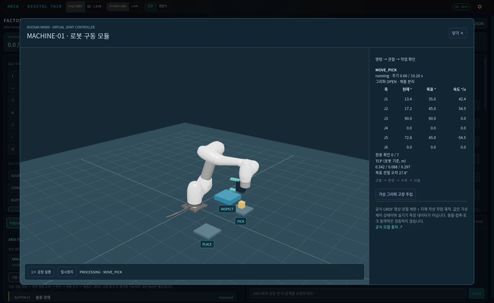

0.5714 → 0.6160
Pixel AP
비지도 산업 이상 위치 탐지 연구에서 보고한 클래스별 선택 결과 평균.
학위논문 보고값 · PatchCore 비교정상 특징 선별 연구에서 AI 코딩 에이전트로 구축한 실험 환경까지.
문제를 정의하고, 구현하고, 비교 실험으로 확인해 왔습니다.
비지도 산업 이상 위치 탐지 연구에서 보고한 클래스별 선택 결과 평균.
학위논문 보고값 · PatchCore 비교유사한 정상 특징의 중복을 줄여 저장할 대표 특징을 선별.
별도 저장량 실험 · 18,967 → 13,482개Pattern Analysis and Applications 게재 · 제2저자.
논문 DOI 보기Pixel AP와 저장 특징 수는 서로 다른 실험 집계에서 얻은 결과입니다. 한 실행에서 두 성과를 동시에 달성했다고 주장하지 않습니다.
학위 연구의 결과와 기술적 문제의식을 학술 발표와 논문으로 정리했습니다.
Pattern Analysis and Applications, 29(3), Article 177 · Springer Nature
2026.08 · 지도교수 이재성 · 비지도 산업 이미지 이상 위치 탐지
산업 이미지의 배경 간섭과 오탐 문제를 분석·발표한 제1저자 논문.
왜 틀렸는지 살피고, 무엇을 바꿨는지 실험으로 확인했습니다.
정상 이미지의 특징을 저장해 결함 위치를 찾는 검색 기반 이상탐지에서, 비슷한 정상 패치가 중복 저장되는 문제를 다뤘습니다.
중복 저장을 줄이면서 정상 패턴의 대표성과 탐지 성능을 검증
특징 선별 로직 구현, 클래스별 조건 비교, 결과·오류 분석
거리 가중 확률 선택 + 코사인 거리 임계값 기반 중복 제거
지도교수의 k-means++ 초기 중심 선택 원리 응용 제안을 바탕으로 실제 알고리즘을 구현하고, MVTec AD 15개 클래스에서 Pixel AP·F1·저장량·실행 비용을 비교했습니다.
연구 절차를 설명하기 위한 개념도이며 실제 특징 분포를 시각화한 결과는 아닙니다.
대학원 신경망특론 과제에서 192kHz 시계열 신호의 모델 구조와 실시간 처리 제약을 비교했습니다. 본인은 TCN 변형 구현과 Causal/Non-causal 평가를 담당했고, FNO·U-FNO는 팀원이 담당했습니다.

데이터를 직접 만들고, 모델을 서비스까지 연결해 본 팀 프로젝트들입니다.

CAPSTONE 02 / 2023라벨이 없는 어종 사진부터 수집·정제해 모바일 추론 서비스로 연결했습니다.

CAPSTONE 01 / 2023원본 보컬의 MR·잡음을 줄이고, 변환 모델과 웹 재생 화면을 연결했습니다.

텍스트 전처리와 임베딩·분류 모델 비교를 통해 성격 유형 분류를 실험했습니다.

달력과 월별 내역으로 수입·지출을 확인할 수 있는 모바일 앱 팀 개발.
수집 위치와 기기에 따라 달라지는 Wi-Fi 신호를 이용한 실내 구역 판별 실험.
연구 밖에서도 기술을 설명하고, 사람들과 일을 조율해 왔습니다.
연구 기술 정리, 변리사와 명세서 내용 협의, 출원 일정과 관련 서류 관리.
중앙대학교 기계학습자동화연구실대한전자공학회 하계학술대회 제1저자 발표, AI 대학원 심포지엄 및 The AI Show 2024 연구실 부스 참여.
산업 이상탐지 주제의 설명과 질의응답로보틱스 SW/HW 융합 설계 실습과 영어 발표 수행.
Chiang Mai University, Thailand학부 간 교류 행사와 약 100명 규모 활동의 일정·역할·대외 협력을 조율했습니다.
중앙대학교 소프트웨어학부프로그래밍 기초 교육을 지원했습니다.
대방초등학교


AI에 구현을 맡기되, 실험의 조건과 결과를 확인하는 책임은 직접 맡았습니다.

가상 공정의 데모 화면입니다. 실물 설비 촬영이나 실기기 제어 기록이 아닙니다.
실제 공장의 데이터와 설비에 접근하기 어려워, 비전 검사·이송·재검사 조건을 가상으로 비교하는 디지털 트윈 기반 공정 시뮬레이션을 개발했습니다.
설비를 구매하거나 운영하지 않고 공정 조건별 가설 검증
기획·입력 데이터·실험 계산 규칙·중단 조건 정의, 코드·결과 검증
Claude: 명세·오류 분석 / Codex: 코드 구현·테스트
용기 이미지 83장 · 동일 K=10,500 비교에서 미탐 감소, 정상 오탐 0건 유지
가상 조건의 결과입니다. 4,320개는 별도 시뮬레이션 실행 수가 아니며 실제 공장 개선 실적으로 해석하지 않습니다.
문제 정의부터 실험 검증까지, 실제로 수행한 과정과 결과를 설명할 수 있습니다.